API钩取
api(application programming interface,应用程序编程接口）。windows系统资源都是由windows os系统直接管理的，用户不能直接访问。用户需要访问系统资源的时候，必须向系统内核（kernel)申请，申请的方法就是使用微软提供的win32api.为了实际运行相应的程序代码，需要加载许多系统库（DLL).所有的进程都会默认加载kernel32.dll,kernel32.dll又会加载ntdll.dll库。

用户模式中的应用程序访问系统资源的时候，由ntdll.dll向内核模式提出访问请求。一般常规系统资源的api会经由kernel32.dll与ntdll.dll不断向下调用，最后同故宫SYSENTRY命令进入内核模式。
使用api钩取技术可以实现对某些win32API 的嗲用过程拦截，并获得相应的控制权限，使用api钩取技术的优势如下：
1）再api调用前/后运行用户的”钩子“代码。
2）查看或操作传递给api的参数或者传递api的返回值
3）取消对api的调用，或者更改执行流程，运行用户代码
下表列出了api钩取的技术图表：
根据对象的不同，api钩取可以分为静态方法与动态方法。静态方法是针对的是“文件”，而动态方法针对的是进程内存。根据钩取的位置不懂，可以分为：
1)iat,将iad内部的api地址更改为钩取函数地址，该方法的优点是实现起来非常见到那，缺点是不能钩取不在iat中的api.
2)代码：系统库（*.dll）映射到进程内存时，从中查找api的实际嗲hi，并直接修改代码，具体的方法分为以下几种：使用jmp指令修改起始代码，覆写函数局部，仅更改必须部分的局部
3）eat:将记录在dll中的eat中的api起始地址更改为钩取函数地址也可以实现api钩取。
根据对应的技术不同，可以分为以下几种技术：
1）调试技术
调试法通过调试目标继承钩取api.调试器拥有被调试者的所有权限（执行控制，内存访问），所以可以向被调试进程的内存任意位置设置钩取函数。这里的调试器是用户编写的用来钩取的程序。在用户编写的程序中使用调试api附加到目标进程，然后设置钩取函数，这样，重启运行时就能偶完全实现api钩取了。也可以向现有的调试器（od,ida,windbg)使用自动化脚本，自动钩取api.
2)注入
向目标进程内存区域进行渗透测试的技术，根据注入对象的不同，可以分为dll注入与代码注入两种技术。
a)dll注入
使用dll注入即使可以使目标进程强制加载用户指定的dll文件。使用该技术的时候需要先在注入的dll中创建钩取代码与设置钩代码，然后再dllmain()中调用设置代码，注入的同时即可完成api钩取。
b）代码注入
代码注入技术广泛用于恶意代码，代码注入技术比dll注入技术更发达。
记事本WriteFile（）API钩取
运行调试
这次在windowsXP的虚拟机下调试程序 因为在自己的win10下有问题无法调试 所以就在winXP下去尝试了
首先运行notepad.exe 得到其PID 如图
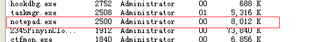
然后运行hookdbg.exe 如图：
接下来像记事本里输入小写字母 随便输就行:
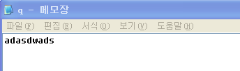
输入完后保存文件 发现刚才CMD黑框里的内容也变了：
发现刚好是刚才输入的内容和转变位大写的内容.
打开保存的记事本文件发现：
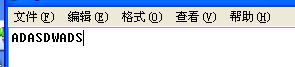
这就是钩取成功的表现了 下面看看其工作原理
工作原理
先来看看WriteFile()定义1
2
3
4
5
6
7BOOL WriteFile(
HANDLE hFile,//文件句柄
LPCVOID lpBuffer,//数据缓存区指针
DWORD nNumberOfBytesToWrite,//你要写的字节数
LPDWORD lpNumberOfBytesWritten,//用于保存实际写入字节数的存储区域的指针
LPOVERLAPPED lpOverlapped//OVERLAPPED结构体指针
);
参数 类型及说明
hFile Long，一个文件的句柄
lpBuffer Any，参数类型:指针,指向将写入文件的 数据缓冲区
nNumberOfBytesToWrite Long，要写入数据的字节数量。如写入零字节，表示什么都不写入，但会更新文件的“上一次修改时间”。针对位于远程系统的命名管道，限制在65535个字节以内
lpNumberOfBytesWritten Long，实际写入文件的字节数量（此变量是用来返回的 ）
lpOverlapped OVERLAPPED，倘若在指定FILE_FLAG_OVERLAPPED的前提下打开文件，这个参数就必须引用一个特殊的结构。那个结构定义了一次异步写操作。否则，该参数应置为空（将声明变为ByVal As Long，并传递零值）
用OD打开notepad 并在每个WriteFile上设置断点
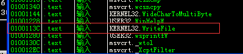
运行程序并在记事本里输入内容 保存后发现 程序断在了WriteFile()处 并发现到了这4个重要的点
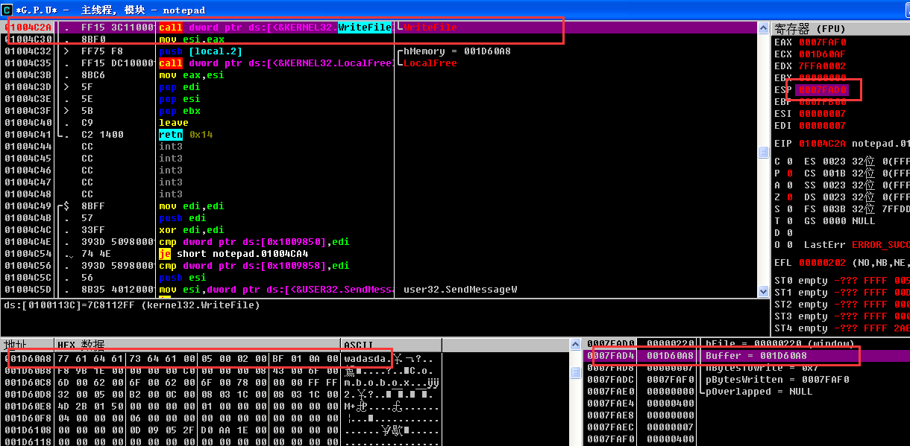
栈中有（ESP）1个返回值ESP+8中存在数据缓冲区的地址 直接跳转到此地址可以发现刚才输入的字符串 钩取Write/file（）API后 用指定字符串覆盖数据缓冲区的内容即可
源代码分析（hookdng.cpp源代码）
main()
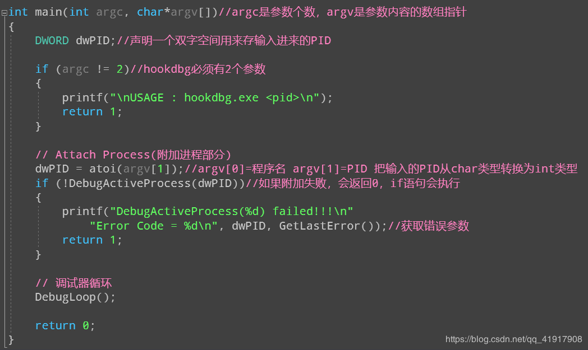
Main函数以程序运行参数的形式接收要钩取API的进程的PID，然后通过DebugActiveProcess()API将调试器附加到该运行的进程上，开始调试。然后进入DebugLoop()函数，处理来自被调试者的调试事件。（也可以通过CreateProcess()API，从一开始就直接以调试模式运行进程）
DebugLoop()
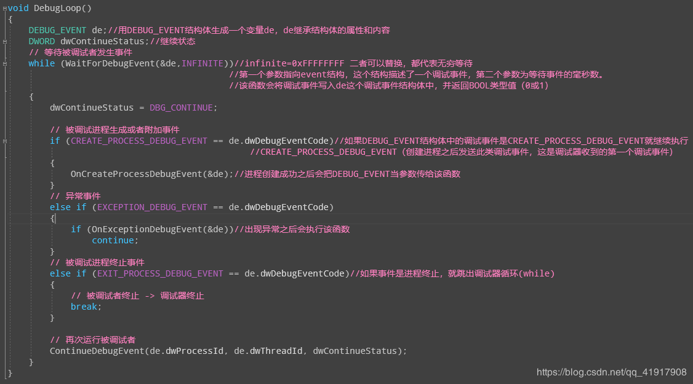
DebugLoop处理了三个DebugEvent，分别是
CREATE_PROCESS_DEBUG_EVENT： 被调试进程启动/附加时触发该事件，调试器调用OnCreateProcessDebugEvent()
EXCEPTION_DEBUG_EVENT：被调试进程遇到iNT 3指令时触发该事件，调试器调用OnExceptionDebugEvent()
EXIT_PROCESS_DEBUG_EVENT：被调试进程终止时触发，在本代码中，调试器在被调试器终止时退出
DebugL oop0函数的工作原理类似于窗口过程函数( WndProc ),它从被调试者处接收事件并处理，然后使被调试者继续运行。DebugLoop(函数代码比较简单，结合代码中的注释就能理解。下面看看其中比较重要的2个API。
顾名思义，WaitForDebugEvent() API (出处: MSDN)是-一个等待被调试者发生调试事件的函数(行为动作类似于WaitForSingleObject() API )。
1 | WaitForDebugEvent( |
DebugLoop(函数代码中,若发生调试事件, WaitForDebugEvent( API就会将相关事件信息设置到其第- -个参数的变量( DEBUG EVENT结构体对象), 然后立刻返回。DEBUG EVENT结构体定义(出处: MSDN)如下所示
1 | typedef struct _DEBUG_EVENT { |
前面的讲解中已经提到过，共有9种调试事件。DEBUG_ EVENT.dwDebugEventCode成员 会被设置为9种事件中的一-种，根据相关事件的种类，也会设置适当的DEBUG_EVENTu(union)成员( DEBUG EVENT.u共用体成员内部也由9个结构体组成，它们对应于事件种类的个数)
ContinueDebugEvent是一个使调试器继续运行的API
定义如下1
2
3
4
5
6
7
8
9ContinueDebugEvent(
__in DWORD dwProcessId,
__in DWORD dwThreadId,
__in DWORD dwContinueStatus
);
ContinueDebugEvent() API 的 最 后 一 个 参 数 dwContinueStatus 的 值 为 DBG_CONTINUE 或 DBG_EXCEPTION_NOT_HANDLED。若处理正常，则其值设置为DBG_CONTINUE;若无法处理，或希望在应用程序的SEH中处 理，则其值设置为DBG EXCEPTION NOT HANDLED
DebugLoopO函数处理3种调试事件，如下所示。
□ EXIT_PROCESS_DEBUG_EVENT
□ CREATE_PROCESS_DEBUG_EVENT
□ EXCEPTION_DEBUG_EVENT
下面分别看看这3个事件。
EXIT_PROCESS_DEBUG_EVENT
被调试进程终止时会触发该事件。本章的示例代码中发生该事件时，调试器与被调试者将一 起终止。
CREATE_PROCESS_DEBUG_EVENT-OnCreateProcessDebugEvent()
OnCreateProcessDebugEvent()是 CREATE_PROCESS_DEBUG_EVENT 事件句柄，被调试进程启动（或者附加）时即调用执行该函数。
OnCreateProcessDebugEvent()
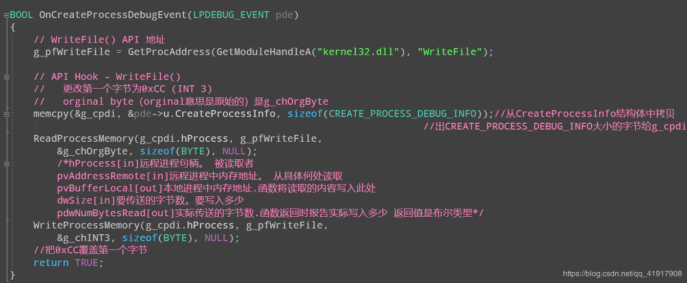
代码首先获得WriteFile的内存地址,
然后将函数地址处的第一个字节数据存放在g_chOrgByte变量中，之后将函数地址处第一个字节改为0xCC
由于调试器拥有被调试进程的句柄（带有调试权限，DLL注入时也是首先将进程提升为调试权限[SE_DEBUG_NAME]）所以可以使用ReadProcessMemory和WriteProcessMemory对被调试进程的内存空间自由进行读写操作。
OnExceptionDebugEvent()
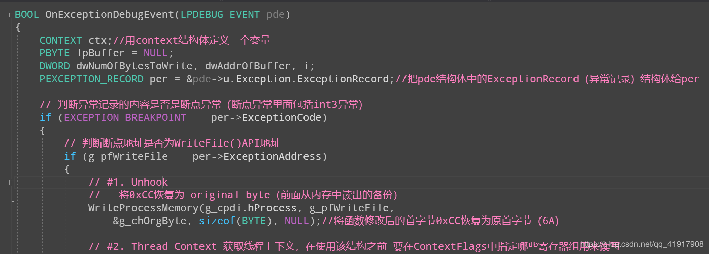
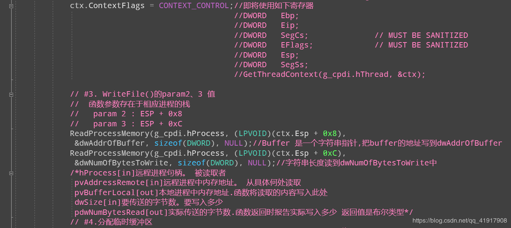
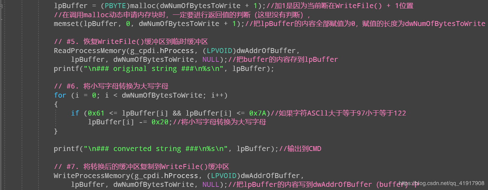
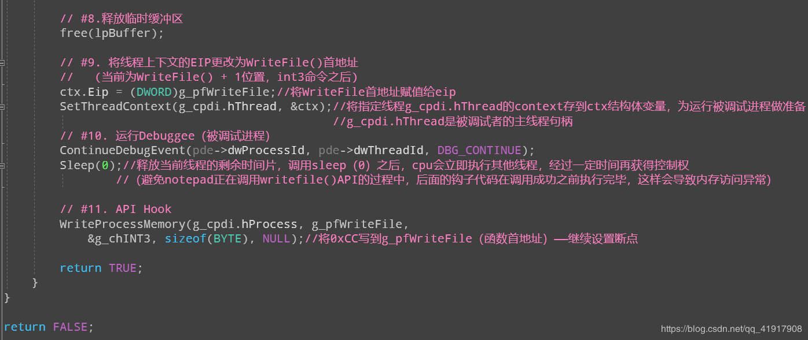
OnExceptionDebugEvent(函数代码有些多，接下来分析核心部分。首先，if语句用于检测异常是否为EXCEPTION_ BREAKPOINT异常(除此之外，还有大约19种异常,请参考前几节内容)。然后，用if语句检测发生断点的地址是否与kernel32!WriteFile(的起始地址一致( OnCreateProcessDebugEvent()已经事先获取了WriteFile()的起始地址)。若满足条件,则继续执行以下代码\
脱钩（恢复原代码）
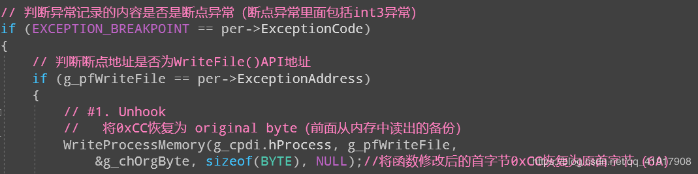
.获取线程上下文
这是第1次提到“线程上下文”，所有程序在内存中都以进程为单位运行，而进程的实际指令代码以线程为单位运行。Windows OS是一个多线程 ( multi-thread )操作系统，同-进程中可以同时运行多个线程。多任务( multi-tasking )是将CPU资源划分为多个时间片( time-slice),然后平等地逐一 运行所有线程(考虑线程优先级)。 CPU运行完一 个线程的时间片而切换到其他线程时间片时，它必须将先前线程处理的内容准确备份下来，这样再次运行它时才能正常无误。
再次运行先前线程时，必须有运行所需信息，这些重要信息指的就是CPU中各寄存器的值。通过这些值，才能保证CPU能够再次准确运行它(内存信息栈&堆存在于相应进程的虚拟空间,
1 | WINBASEAPI |
像这样调用GetThreadContext() API (出处: MSDN),即可将指定线程( g_ cpdi.hThread)的CONTEXT存储到ctx结构体变量( g_ cpdi.hThread是被调试者的主线程句柄)。
获取WriteFile()的param值
调用WriteFile()函数时,我们要在传递过来的参数中知道param2 (数据缓冲区地址)与param3(缓冲区大小)这2个参数。函数参数存储在栈中，通过#2中获取的CONTEXT.Esp成员可以分别获得它们的值
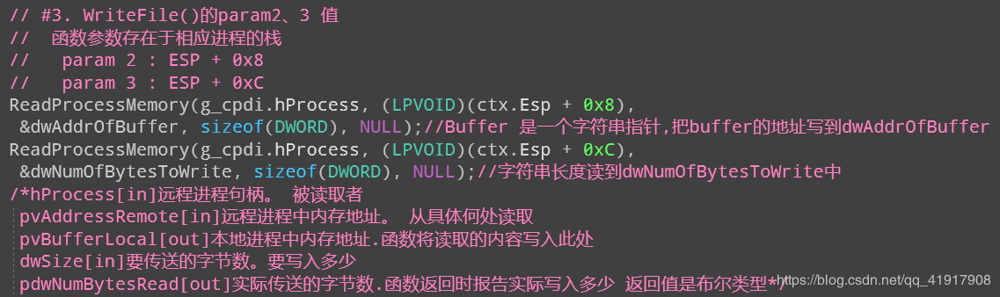
存储在dwAddrOfBuffer中的数据缓冲区地址是被调试者（notepad.exe）虚拟内存空间中的地址
把小写字母转换为大写字母后覆写在WriteFile()缓冲区
获取数据缓冲区的地址与大小后,将其内容读到调试器的内存空间，把小写字母转换为大写字母。然后将修改后的大写字母覆写到原位置(被调试者的虚拟内存)。整个代码不难，结合代码中的注释就能轻松理解
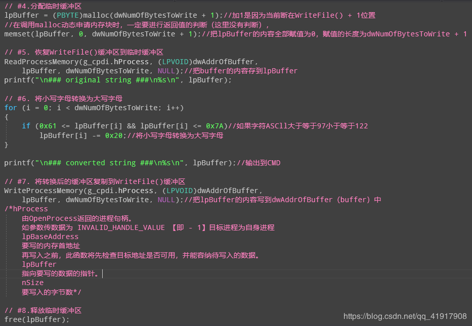
把线程上下文的EIP修改为WriteFile()起始地址
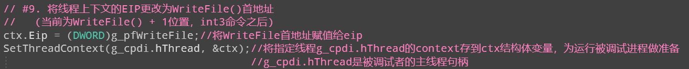
将线程上下文的EIP更改为WriteFile()首地址(当前为WriteFile() + 1位置，int3命令之后)
修改好CONTEXT.Eip成员后，调用SetThreadContext()API来修改1
2
3
4
5
6
7SetThreadContext(
__in HANDLE hThread,
__in CONST CONTEXT *lpContext
);
运行调试进程
全部准备完成后，接下来就正常调用WriteFile()API了，调用ContinueDebugEvent()API就可以重启被调试进程，使之继续运行。
继续HOOK（达到循环获取的目的）
最后设置API“钩子”，方便下次钩取操作(若略去该操作，由于#1中已经“脱钩”, WriteFile()API钩取将完全处于“脱钩”状态)
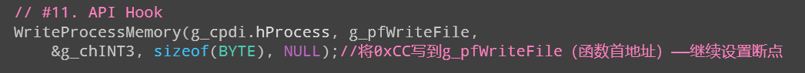
在 OnExceptionDebugEvent()函 数 中 调 用 了 ContinueDebugEvent()函 数 后 ，为 什 么 还 要 调 用Sleep(0)函 数 ？
计算器显示成文字
OD法更改
首先利用OD修改内存中的值来实现计算器显示中文数字（这次还是在XP虚拟机里运行的）
用OD打开calc.exe 快捷键ctrl+N查看目标文件的API函数
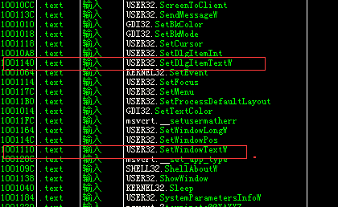
这里我们发现的两个值得关注的API函数 SetWinsowTextW（）和SetDlgItemTextW（） 他们负责向计算器的文本显示框中显示文本 来看看SetWinsowTextW（）API定义：
1 | BOOLSetWindowText( |
hWnd
要改变文本内容的窗口或控件的句柄。不能改变在其他应用程序中的控件的文本内容，如果需要可以用另外一个SendMessage函数发送一条WM_SETTEXT消息。
lpString
指向一个空结束的字符串的指针，该字符串将作为窗口或控件的新文本。
这里我们关注第二个参考——字符串指针（lpString）钩取时查看字符串（lpString）中的内容 将其中的阿拉伯数字改成中文就行
然后在刚才关注的那两个API函数上设置断点
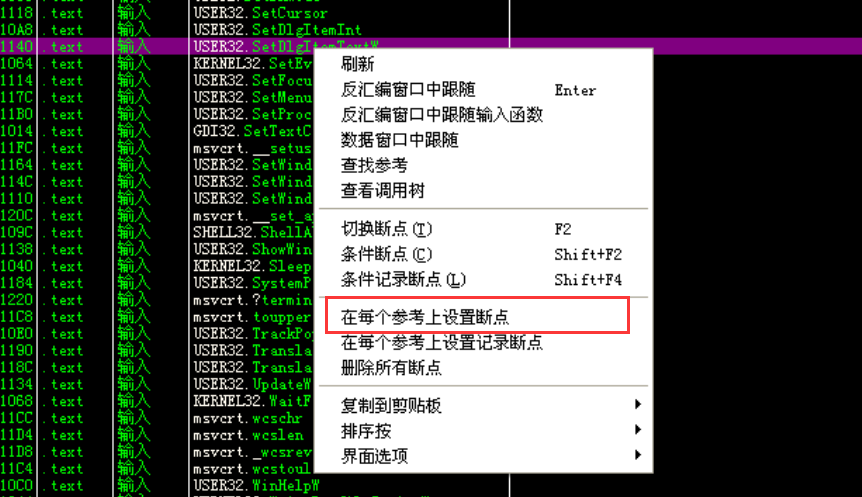
运行
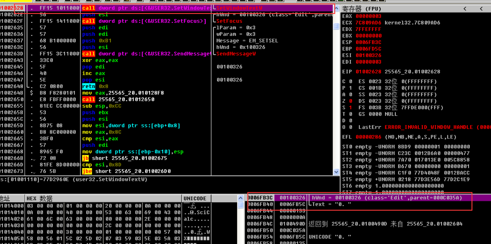
第一次运行断在了SetwindowTextW这里 右下角堆栈窗口发现字符0就是计算器开始的在字符0
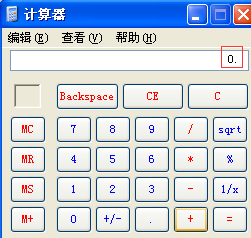
在运行断在了SetDlgItemTextW（）处 再次运行一下 计算器的页面出现了 为了继续调试 我们望计算器中输入7 发现OD自动在SetwindowTextW这里停了

看到了刚才说的那两个参数 在数据窗口跟随TEXT那一项发现了储存的数字7
将中文数字 七 的Unicode码（4e03）覆写到地址处 这里记得要逆序（034e）写入
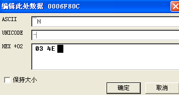
发现数字7已经变成汉字七了！
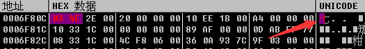
运行程序在计算器中看到已经变了：
这里就算完成了OD的过程 对SetWinsowTextW（）API验证结束 接下来看看IAT钩取操作及其实现原理
IAT钩取工作原理
IAT钩取通过修改IAT中保存的API地址来钩取某个API 如图：
练习示例
先复制文件到工作目录（c:work）然后运行calc.exe程序 再打开任务管理器查看其PID 如图：
然后在命令窗口执行如图命令：
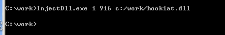
接下来在计算器随便输入一些数值 如图：
我们可以看到 输入的数值已经变成了中文 计算器也在正常运行（其实我自己调试的这个InjectDLL.exe注入的hookiat.dll注入之后计算器显示的是韩文 可能是韩国人整的DLL文件吧 但确实是钩取成功了！！）
源代码分析（hookiat.dll）
Dllmain（）
1 | BOOL WINAPI DllMain(HINSTANCE hinstDLL, DWORD fdwReason, LPVOID lpvReserved) |
在DLL_PROCESS_ATTACH事件中先获取user32.SetWindowTextW的地址，然后保存到全局变量g_pOrgFunc中，后面脱钩会用到这个地址。
MySetWindowTextW()
1 | BOOL WINAPI MySetWindowTextW(HWND hWnd, LPWSTR lpString) |
lpString参数是一块缓冲区，该缓冲区用来存放要输出显示的字符串。for循环将存放在lpString的阿拉伯数字字符串转换为中文数字字符串。for循环结束后，最后再调用函数指针g_pOrgFunc。
hook_iat()1
2
3
4
5
6
7
8
9
10
11
12
13
14
15
16
17
18
19
20
21
22
23
24
25
26
27
28
29
30
31
32
33
34
35
36
37
38
39
40
41
42
43
44
45
46
47
48
49
50
51
52
53
54
55
56
57
58
59
60BOOL hook_iat(LPCSTR szDllName, PROC pfnOrg, PROC pfnNew)
{
HMODULE hMod;
LPCSTR szLibName;
PIMAGE_IMPORT_DESCRIPTOR pImportDesc;
PIMAGE_THUNK_DATA pThunk;
DWORD dwOldProtect, dwRVA;
PBYTE pAddr;
// hMod, pAddr = ImageBase of calc.exe
// = VA to MZ signature (IMAGE_DOS_HEADER)
hMod = GetModuleHandle(NULL);
pAddr = (PBYTE)hMod;
// pAddr = VA to PE signature (IMAGE_NT_HEADERS)
pAddr += *((DWORD*)&pAddr[0x3C]);
// dwRVA = RVA to IMAGE_IMPORT_DESCRIPTOR Table
dwRVA = *((DWORD*)&pAddr[0x80]);
// pImportDesc = VA to IMAGE_IMPORT_DESCRIPTOR Table
pImportDesc = (PIMAGE_IMPORT_DESCRIPTOR)((DWORD)hMod+dwRVA);
for( ; pImportDesc->Name; pImportDesc++ )
{
// szLibName = VA to IMAGE_IMPORT_DESCRIPTOR.Name
szLibName = (LPCSTR)((DWORD)hMod + pImportDesc->Name);
if( !_stricmp(szLibName, szDllName) )
{
// pThunk = IMAGE_IMPORT_DESCRIPTOR.FirstThunk
// = VA to IAT(Import Address Table)
pThunk = (PIMAGE_THUNK_DATA)((DWORD)hMod +
pImportDesc->FirstThunk);
// pThunk->u1.Function = VA to API
for( ; pThunk->u1.Function; pThunk++ )
{
if( pThunk->u1.Function == (DWORD)pfnOrg )
{
VirtualProtect((LPVOID)&pThunk->u1.Function,
4,
PAGE_EXECUTE_READWRITE,
&dwOldProtect);
pThunk->u1.Function = (DWORD)pfnNew;
VirtualProtect((LPVOID)&pThunk->u1.Function,
4,
dwOldProtect,
&dwOldProtect);
return TRUE;
}
}
}
}
return FALSE;
}
该函数主要负责钩取API
首先从ImageBase开始经由PE签名找到IDT


pImportDesc变量中存储着IMAGE_IMPORT_DESCRIPTOR结构体的起始地址，后者是calc.exe进程IDT的第一个结构体。IDT是由IMAGE_IMPORT_DESCRIPTOR结构体组成的数组。若想查找到IAT，先要查找到这个位置。使用PEView查看该地址(00012B80+01000000=01012B80)，如图所示。
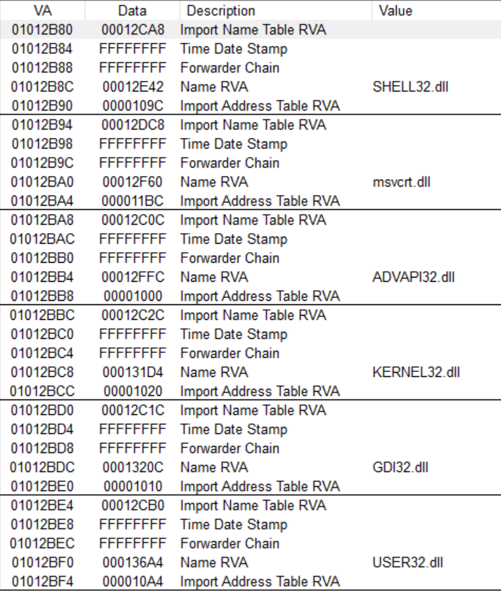
在for循环中通过比较查找到user32.dll的IMAGE_IMPORT_DESCRIPTOR结构体地址，从上图可以看出最终pImportDesc的值为01012BF4。接下来进入user32的IAT，pImportDesc->FirstThunk成员所指的就是IAT。使用PEView查看该地址(000010A4+01000000=010010A4)，如图所示
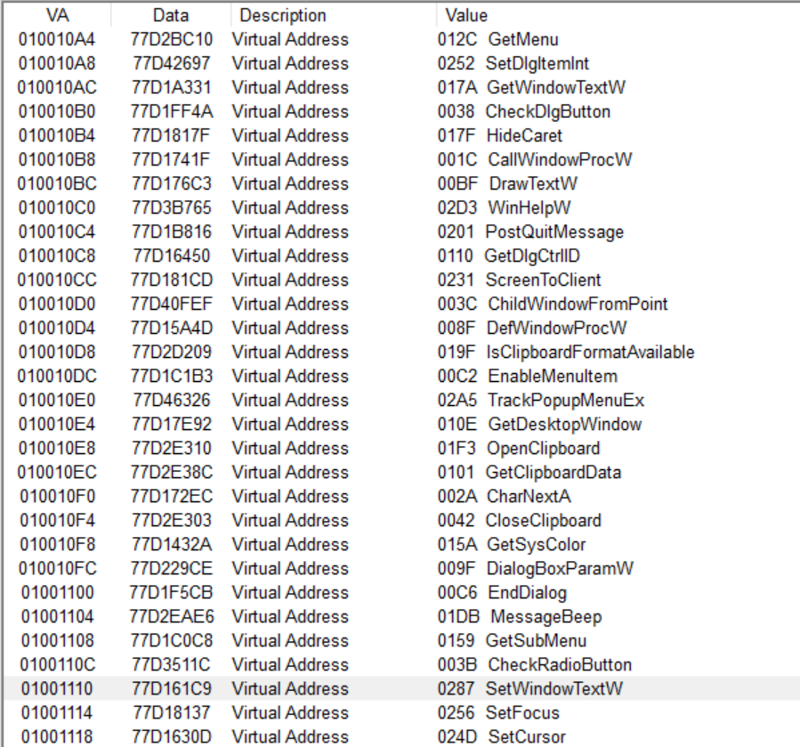
接下来又在for循环中查找SetWindowTextW的IAT地址(01001110)，然后修改它的值。因为计算器进程的IAT内存区域是只读的，所以需要使用VirtualProtect在钩取之前将相应的区域改为可读写的，钩取之后再改回来。
调试被注入的DLL文件
首先运行calc程序 查看其PID的值
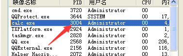
将程序进程附加到OD中 然后在事件中选定中断于新DLL进程 然后将hookiat.dll注入计算器进程
运行程序发现：
双击进入hookiat.dll中 接下来取消刚才事件中的中断于新DLL的选项 然后在hookiat模块查找参考字符串寻找DllMain（）代码 当然也可以F7单步跟踪查找 DllMain()函数中使用的字符串有“user32.dll”和“SetWindowTextW”
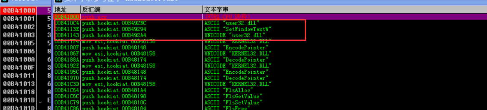
我们发现“user32.dll”有两处“SetWindowTextW”有一处 转到“SetWindowTextW”处：
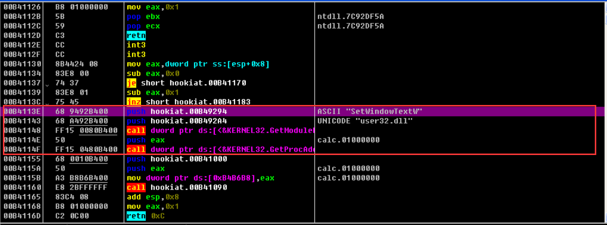
框出来的内容就是DllMain（）函数了
这就是调试注入进程Dll的方法了
Dllmain（）
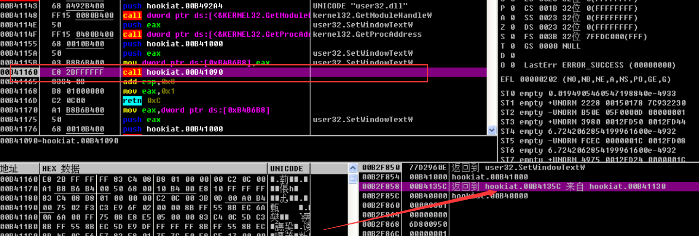
这个call语句就是调用hook_iat()
步入刚才那个call语句进入hook_iat()
hook_iat()
查找IMAGE_IMPORT_DESCRIPTION Table
hook_iat()是负责具体实施IAT钩取的核心函数 下面是调试一下：
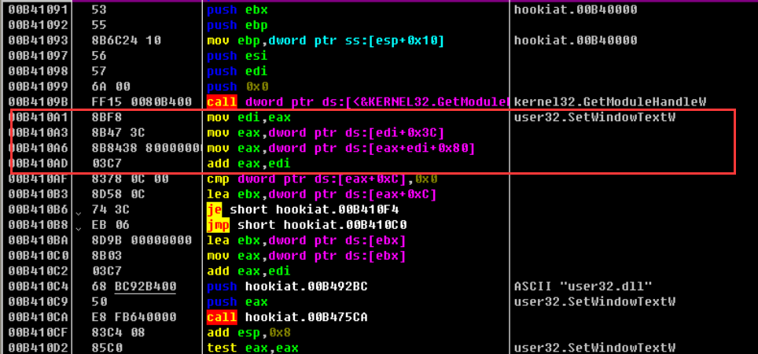
框起来的部分就是IMAGE_IMPORT_DESCRIPTION Table（下面简称“IID Table”）的过程 一时难分代码仅仅用了4行代码就找到了ID Table

这个call指令用于调用stricmp（）函数。
在IAT中查找SetWindowTextW API位置
通过便利IID Table比较IID.Name于“user32.dll”字符串 查找到user32.dll的IID 找到之后 下面代码用来查找SetWindowTextW API位置 然后修改其中内容 从而实现对API的钩取

cmp语句中ESI的值为user32.dll的IAT起始地址 EBP的值为SetWindowTextW的地址 代码循环进入IAT SetWindowTextW的地址值（ebp的值）
IAT钩取
IAT钩取代码
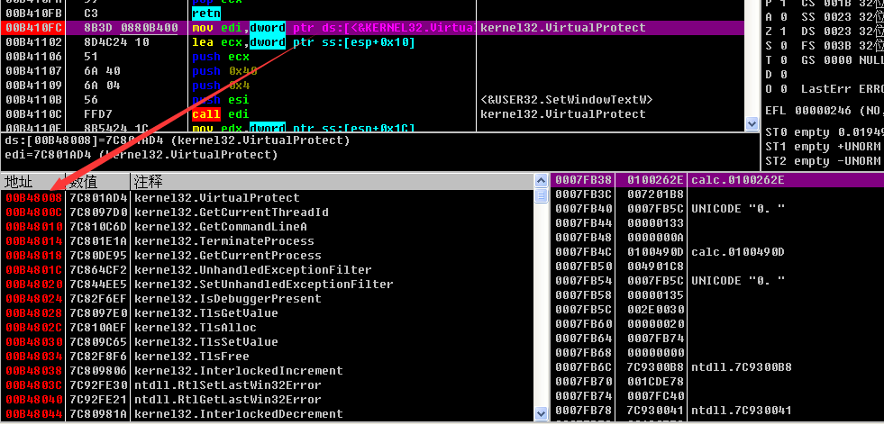
MOV指令用来将MySetWindowTextW的地址覆写到前面从IAT中获取的SetWindowTextW的地址 执行后就变成了执行MySetWindowTextW地址的代码 也就是将数字变成汉字的代码段